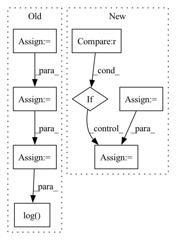

Pattern ID :6282
Before Change
loss = self.cal_loss(outputs, targets, output_lengths, target_lengths)
predicts = self.forward(inputs, input_lengths)
predicts = [self.text_process.int2text(sent) for sent in predicts]
targets = [self.text_process.int2text(sent) for sent in targets]
list_wer = torch.tensor(
[self.cal_wer(i, j).item() for i, j in zip(predicts, targets)]
)
wer = torch.mean(list_wer)
if batch_idx % 100 == 0:
self.log_output(predicts[0], targets[0], wer)
self.log("test_loss", loss)
self.log( "test_batch_wer", wer)
return loss, wer
def log_output(self, predict, target, wer):After Change
def test_step(self, batch: Tensor, batch_idx: int):
inputs, input_lengths, targets, target_lengths = batch
targets_ctc = targets[:, 1:-1]
outputs, output_lengths = self(inputs, input_lengths)
loss = self.criterion(
outputs.permute(1, 0, 2), targets_ctc, output_lengths, target_lengths
)
self.log("test loss", loss)
if batch_idx % self.log_idx == 0 :
label_sequences, predict_sequences, wer = self.get_wer(
targets_ctc, inputs, input_lengths
)
self.log_output(predict_sequences[0], label_sequences[0], wer)In pattern: SUPERPATTERN
Frequency: 3
Non-data size: 8
Instances Fragment ID: 21723723
Project Name: manhph2211/vistt
Commit Name: 742be9424d91058a3c3e25adc4db742534fffab3
Time: 2022-08-30
Author: manhph5@vingroup.net
File Name: VASR/local/src/engine/trainer.py
M Class Name: ConformerModule
N Class Name: ConformerModule
M Method Name: test_step(3)
N Method Name: test_step(3)
M Parent Class: BaseModel
N Parent Class: pl.LightningModule
M File Name: VASR/local/src/engine/trainer.py
N File Name: VASR/local/src/engine/trainer.py
M Start Line: 105
M End Line: 136
N Start Line: 128
N End Line: 148
Before Change
def forward(self, audio, audio_len):
if random.random() < 0.2:
audio_mask = (torch.arange(audio.shape[1], device=audio.device)[None, :, None] < audio_len[:, None, None]).float()
x = torch.exp(audio - 1e-6) * audio_mask
y = torch.cat([x[1:], x[:1]])
return torch.log( 0.9 * x + 0.1 * y + 1e-6) * audio_mask, audio_len
return audio, audio_len
After Change
if random.random() < AUGUMENT_RATE:
audio = self.timemask(audio)
if random.random() < AUGUMENT_RATE:
audio = self.freqmask(audio)
if random.random() < AUGUMENT_RATE :
audio = self.mixnoise(audio)
if random.random() < AUGUMENT_RATE:
audio = self.mixaudio(audio, audio_len)
Fragment ID: 21723593
Project Name: kaiidams/voice100
Commit Name: dfe0234fcc858357cb2a91bcba1da06792eabab7
Time: 2021-06-25
Author: katsuya.iida@gmail.com
File Name: voice100/audio.py
M Class Name: BatchSpectrogramAugumentation
N Class Name: BatchSpectrogramAugumentation
M Method Name: forward(3)
N Method Name: forward(3)
M Parent Class: nn.Module
N Parent Class: nn.Module
M File Name: voice100/audio.py
N File Name: voice100/audio.py
M Start Line: 73
M End Line: 78
N Start Line: 80
N End Line: 95
Before Change
loss = self.cal_loss(outputs, targets, output_lengths, target_lengths)
predicts = self.forward(inputs, input_lengths)
predicts = [self.text_process.int2text(sent) for sent in predicts]
targets = [self.text_process.int2text(sent) for sent in targets]
list_wer = torch.tensor(
[self.cal_wer(i, j).item() for i, j in zip(predicts, targets)]
)
wer = torch.mean(list_wer)
if batch_idx % 100 == 0:
self.log_output(predicts[0], targets[0], wer)
self.log("val_loss", loss)
self.log( "val_batch_wer", wer)
return loss, wer
def test_step(self, batch, batch_idx):After Change
def validation_step(self, batch: Tensor, batch_idx: int):
inputs, input_lengths, targets, target_lengths = batch
targets_ctc = targets[:, 1:-1]
outputs, output_lengths = self(inputs, input_lengths)
loss = self.criterion(
outputs.permute(1, 0, 2), targets_ctc, output_lengths, target_lengths
)
self.log("test loss", loss)
if batch_idx % self.log_idx == 0 :
label_sequences, predict_sequences, wer = self.get_wer(
targets_ctc, inputs, input_lengths
)
self.log_output(predict_sequences[0], label_sequences[0], wer) Fragment ID: 21723662
Project Name: manhph2211/vistt
Commit Name: 742be9424d91058a3c3e25adc4db742534fffab3
Time: 2022-08-30
Author: manhph5@vingroup.net
File Name: VASR/local/src/engine/trainer.py
M Class Name: ConformerModule
N Class Name: ConformerModule
M Method Name: validation_step(3)
N Method Name: validation_step(3)
M Parent Class: BaseModel
N Parent Class: pl.LightningModule
M File Name: VASR/local/src/engine/trainer.py
N File Name: VASR/local/src/engine/trainer.py
M Start Line: 72
M End Line: 103
N Start Line: 106
N End Line: 126